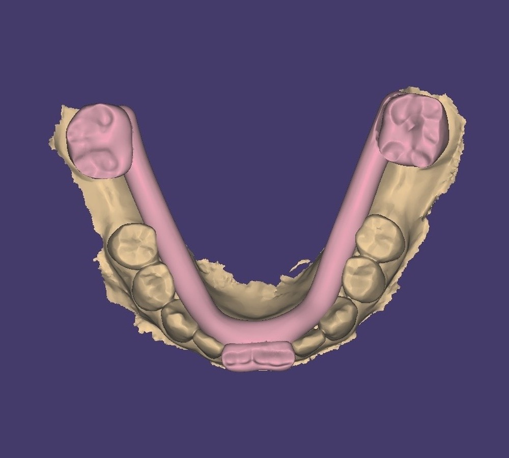

固定補綴 CAD
単冠、ブリッジ、ベニア、インレー、オンレー、コーピング、および技術レビューと製作に向けた補綴 CAD ファイル。
MW DenTech は、クラウン・ブリッジ、審美、インプラント、スプリント、全顎咬合リハビリ、フルアーチインプラントリハビリで外部設計支援を必要とする歯科技工所とデジタル対応クリニックを支援します。
コア CAD 支援と戦略的リハビリワークフローを分けることで、日常設計症例と多段階再建症例を初期から明確に範囲定義できます。
臨床位置と治療方針がすでに定義されている症例向けの、コンパクトで製作志向の CAD 支援。
単冠、ブリッジ、ベニア、インレー、オンレー、コーピング、および技術レビューと製作に向けた補綴 CAD ファイル。

スマイルデザイン、デジタルワックスアップ、前歯形態、テクスチャー、左右対称性、SmileCloud 対応の審美ワークフロー。

カスタムアバットメント、インプラントクラウン、スクリュー固定補綴、エマージェンスプロファイル設計、インプラント補綴 CAD 支援。

単独インプラントガイド CAD と、追加埋入部位は範囲に応じて見積。インプラント計画とスリーブプロトコルが明確な場合は部分顎ガイド設計にも対応します。

咬合位がすでに指示されている場合の、ミシガンスプリント、安定化スプリント、ナイトガード、デプログラマー、日常的な装置 CAD。
シーケンス、検証、プロビジョナルから最終補綴までの調整が必要な症例に対する、症例別の戦略的計画支援。
 AxisGuide
AxisGuide
臨床医主導の TMJ 配慮型修復、矯正、全顎リハビリ症例に対する、MRI/CBCT/STL 情報に基づく選択型計画支援。
AxisGuide を見る 全顎
全顎
咬耗歯列、VDO 変更、咬合平面補正、加算型ワックスアップ、プロビジョナル設計、最終補綴 CAD 調整に対応する包括的リハビリ。
 フルアーチ
フルアーチ
All-on-X と終末歯列ワークフロー。フルアーチインプラント計画、サージカルガイド設計、固定ピン計画、即時荷重プロビジョナル設計、検証ワークフロー、最終フルアーチ補綴支援を含みます。

CAD 作業開始前に実務上の詳細を明確にし、何がいつレビュー可能になるかを把握できるようにします。
複雑な歯科記録は機微情報です。支払い、臨床ファイル、プロジェクト範囲を分け、不必要な患者情報を露出せずに協業できるようにします。
CaseHub は、構造化された症例受付、歯牙選択、ファイルアップロード、ステータス追跡、症例ディスカッション、納品ファイルを 1 つのプライベートワークスペースに集約します。可能な限り匿名化または最小化された臨床記録を前提とし、MW DenTech が選定ラボやクリニックとワークフローを検証している間、ベータ版は招待制です。
MW が範囲レビューを始める前に、症例コード、指示概要、選択歯、期限、緊急度、初回ファイルを収集します。
パートナーからの質問、MW のメモ、ファイル納品、レビューコメントを同じ症例参照に紐づけます。
初回協業の範囲とデータ転送の期待値が合意された後、選択的にアクセスを導入します。
日常設計は継続協業を前提に価格設定します。高度な計画は、画像レビュー、シーケンス、検証、プロビジョナル段階を丁寧に範囲定義するため、先に見積します。
これらの匿名化例は、症例がメニュー価格 CAD を超える場合に使う資料、計画出力、臨床的境界を示します。




公開開始価格により、反復可能な CAD 業務をテストできます。特記がない限り、表示 EUR 価格は VAT/IVA を除く専門業務の純額です。シーケンス、画像レビュー、段階的プロビジョナル計画が作業量に影響する項目は、個別に範囲定義してから見積します。
VAT / IVA 注記：必要な場合はスペイン IVA が適用され、現在の標準税率は 21% です。有効な VAT 情報が確認された対象 EU B2B クライアントにはリバースチャージで請求でき、その他の適用税はクライアント所在地と請求状態に従って処理します。
実際の歯科 CAD の経済性に基づいています。価格は CAD 設計と計画支援のみを対象とし、書面見積または請求書に記載がない限り、プリント、製作、部品、配送、関税、VAT/IVA、その他税金は含みません。継続量、ファイル品質、修正傾向が確認された後、ボリューム価格に対応できます。
メニュー価格 CAD はファイル確認後にメニューから価格設定できます。AxisGuide、全顎、フルアーチは、資料、シーケンス、検証ステップが実作業量を決めるため、先に範囲定義します。
メニュー価格 CAD サービスを選ぶか、症例を AxisGuide、全顎、フルアーチリハビリとして特定します。
予定前に、ファイル品質、ライブラリ、咬合記録、画像、製作方法、転送経路を確認します。
メニュー価格 CAD は範囲確認後に支払いと請求書の案内を受け取り、複雑症例は書面見積またはデポジット依頼を受け取ります。
製作または次の臨床段階の前に、貴チームが CAD または計画ファイルを確認します。
資料、咬合位、インプラントライブラリ、製作方法が明確な反復業務に適しています。
ファイルレビューと範囲確認後、公開純額メニューから価格設定します。
メニュー見積を依頼シーケンス、画像レビュー、プロビジョナル戦略、多職種連携が範囲に影響する症例に適しています。
書面見積、デポジット、段階別支払い案内の前に個別に範囲定義します。
見積を依頼口腔内スキャン、必要な咬合記録、出力形式、CAD/CAM システム、材料または製作方法、希望納期を送付します。
スキャン、写真、咬合または顎位関係記録、プロビジョナルまたはワックスアップ参考、VDO または咬合目標、範囲に含まれる場合は MRI/CBCT を送付します。
CBCT/DICOM、インプラント計画または提案位置、スキャンボディまたは MUA 記録、固定要件、即時プロビジョナル目標、最終補綴目標を送付します。
代表的な症例を 1 件送付してください。設計開始前に、メニュー価格に合うか、範囲見積が必要かを確認します。
初回症例送付前のラボと臨床医向け短い回答。
MW DenTech は CAD 設計と計画支援を提供します。価格は CAD/設計の純額であり、別途取り決めて書面見積または請求書に表示されない限り、プリント、ミリング、部品、配送、関税、VAT/IVA、その他税金は含みません。
明確なサービスカテゴリー、使用可能な資料、指示済み咬合位、既知の製作方法、予測可能な成果物を持つ日常 CAD です。
複雑症例はシーケンス、画像レビュー、プロビジョナル戦略、検証記録、学際的調整に依存するため、価格設定前に範囲確認が必要です。
元資料と指示が変わらない場合、技術的修正 1 回を含みます。新資料、新咬合位、インプラント計画変更、治療方針変更、成果物追加は範囲更新として扱います。
合意済みアップロードリンクまたは安全な転送チャネルを使用してください。可能な限り患者識別情報を削除し、支払いメモに臨床詳細を書かないでください。
AxisGuide は、選択された臨床医主導の TMJ 配慮型リハビリ症例に対応します。段階的咬合再建前に提案下顎位を計画、テスト、検証するための、画像情報に基づく構造化された経路を提供します。